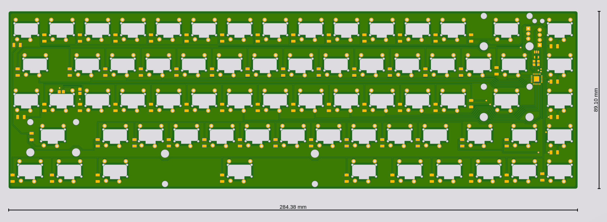
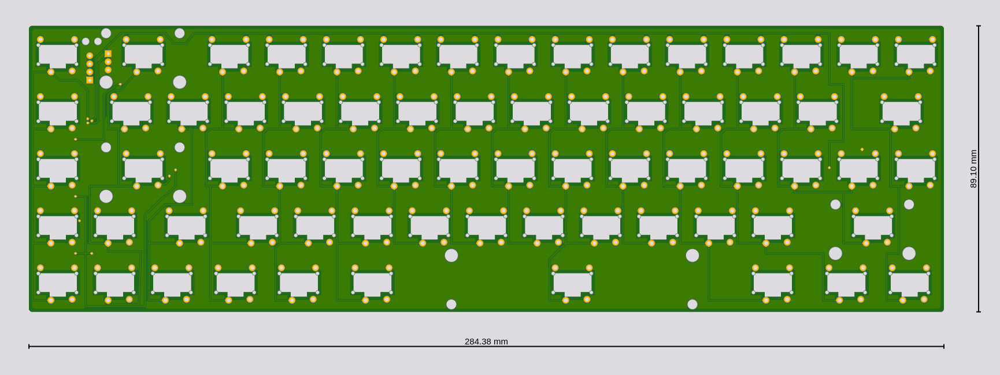

PCB¶
Published on 2019-10-10 in Flounder Keyboard.
I decided to go with the stabilizers I currently have, and maybe cut them up a bit—we will see how that works. Having finally measured the key caps, and figured out where the stabilizers should go and whether the caps won’t be too close together, all that is left to do is to actually design the PCB. Here it is:
 As you can see, it’s a tight fit. I will probably end up gluing the stabilizers to the board anyways (after cutting off the parts that go under the board and that normally hold them in place). I had to drop the USB port, and I will instead use a USB cable—there simply wasn’t enough room for it at the top of the board, between the switches and the stabilizers. The 48-pin SAMD21 microcontroller is perfect—just the right number of pins for a 5×15 matrix, with an extra pin left for the NumLock LED (also re-used as a status LED).
I will let this design sit there for a while, as I’m sure I will find some errors in it. I might even get rid of all those right angles if I’m bored, but I decided to not care much for them.